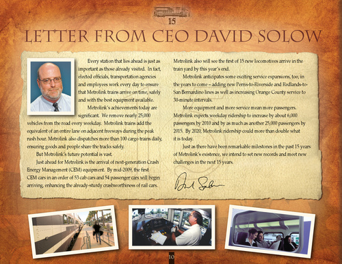

|

Letter from CEO David Solow
Every station that lies ahead is just as important as those already visited. In fact, elected officials, transportation agencies and employees work every day to ensure that Metrolink trains arrive on time, safely and with the best equipment available. Metrolink’s achievements today are significant. We remove nearly 25,000 vehicles from the road every weekday. Metrolink trains add the equivalent of an entire lane on adjacent freeways during the peak rush hour. Metrolink also dispatches more than 100 cargo trains daily, ensuring goods and people share the tracks safely. But Metrolink’s future potential is vast. Just ahead for Metrolink is the arrival of next-generation Crash Energy Management (CEM) equipment. By mid-2009, the first CEM cars in an order of 53 cab cars and 54 passenger cars will begin arriving, enhancing the already-sturdy crashworthiness of rail cars. Metrolink also will see the first of 15 new locomotives arrive in the train yard by this year’s end. Metrolink anticipates some exciting service expansions, too, in the years to come – adding new Perris-to-Riverside and Redlands-toSan Bernardino lines as well as increasing Orange County service to 30-minute intervals. More equipment and more service mean more passengers. Metrolink expects weekday ridership to increase by about 6,000 passengers by 2010 and by as much as another 25,000 passengers by 2015. By 2020, Metrolink ridership could more than double what it is today. Just as there have been remarkable milestones in the past 15 years of Metrolink’s existence, we intend to set new records and meet new challenges in the next 15 years.
10
|